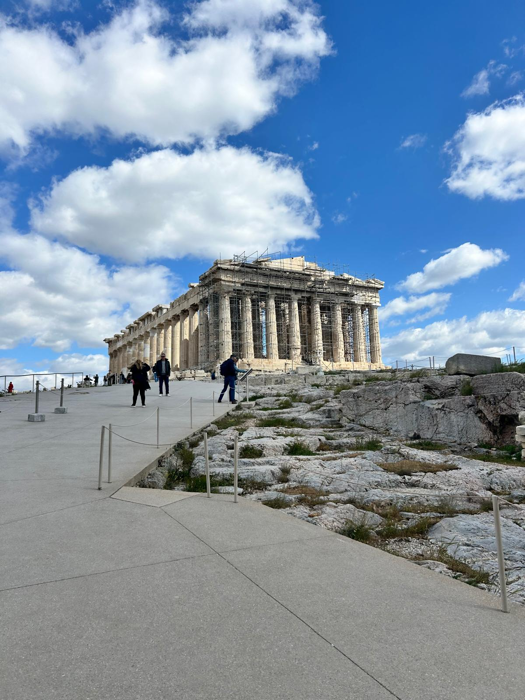
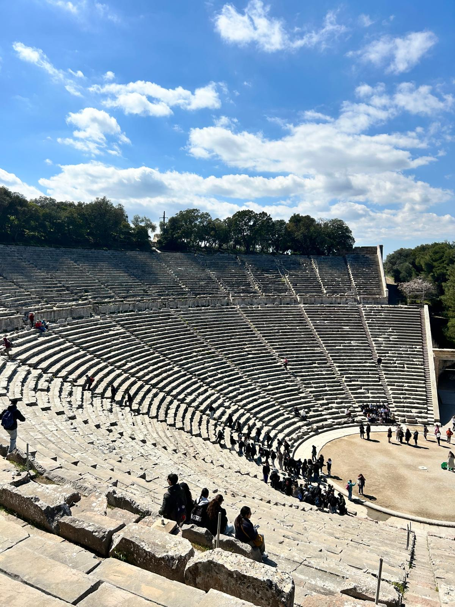
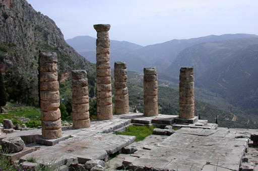
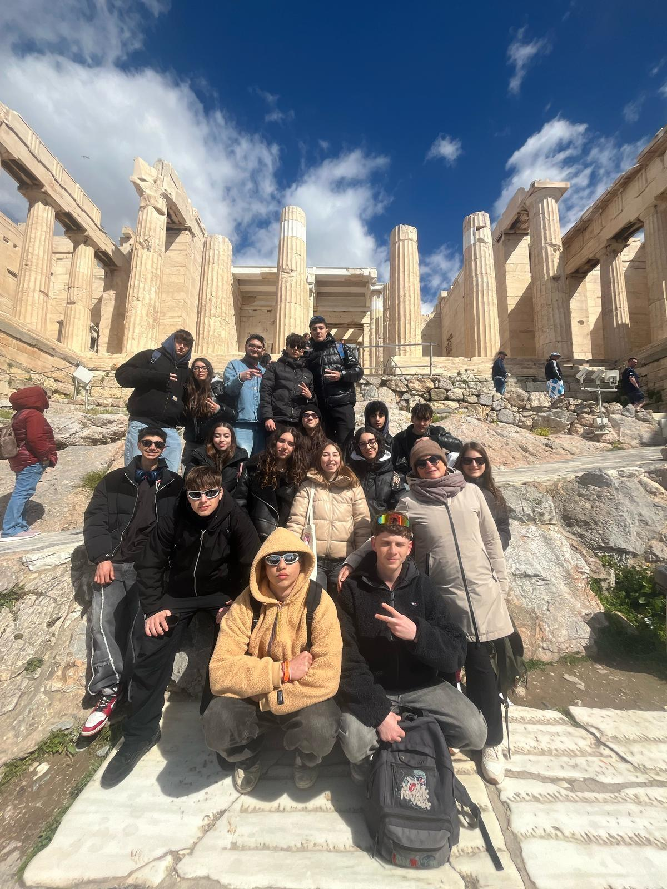

Cosa ho allenato
- Pensiero critico attraverso dialoghi e confronto di idee.
- Comunicazione chiara e argomentazione in pubblico.
- Empatia e intelligenza emotiva nei lavori di gruppo.
- Sensibilita storica e culturale applicata al presente.
Questa esperienza non e stata solo culturale: mi ha aiutato a migliorare pensiero critico, ascolto attivo e capacita di collegare storia, filosofia e realta attuale.
Torno da questa esperienza con maggiore apertura mentale, consapevolezza personale e sicurezza nell'interazione con gli altri. E un passaggio importante per il mio percorso di studio e di crescita.

Atene / Acropoli
Delfi
Epidauro
Momenti con la classe